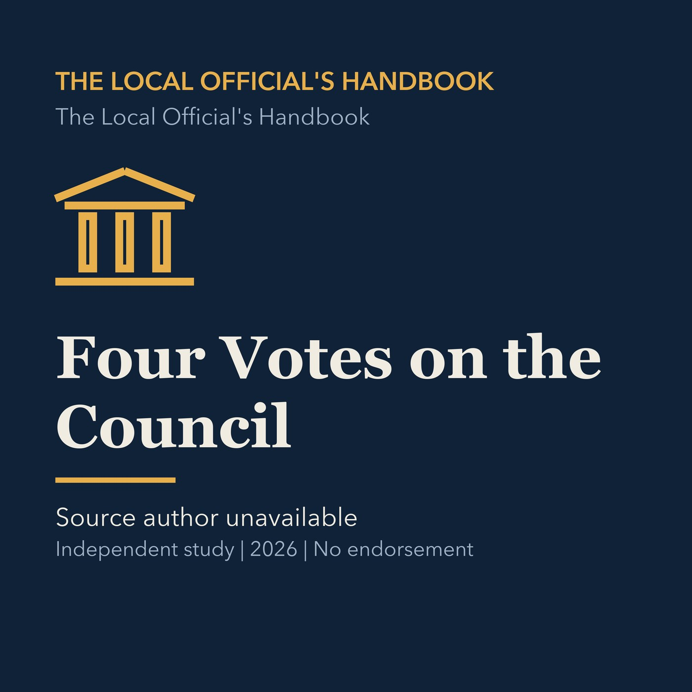

EPISODE 06
Four Votes on the Council
Explains collective City Council authority, motions, budgets, appointments, and the importance of four votes in Torrance.

- Stable GUID
d8baa06f-3644-5606-a8d4-fcccbfe4499f- Release
- local-officials-handbook-v2026.2
- SHA-256
8faf1e2e82e26ddc83d77ccb7f9a07c0034388f5c14dbbb2ca1ef08c6e4ac2cc